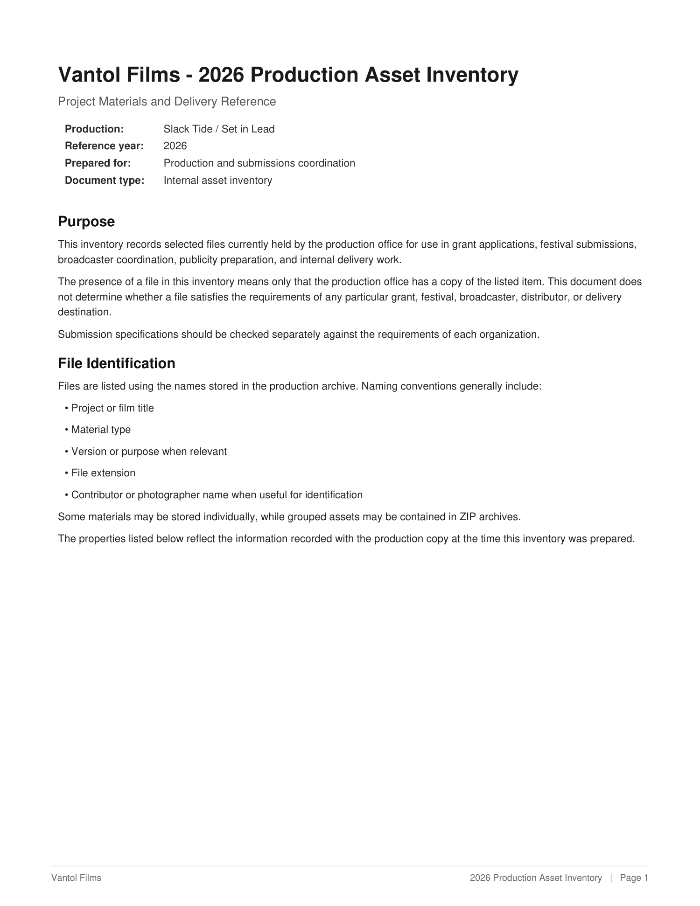
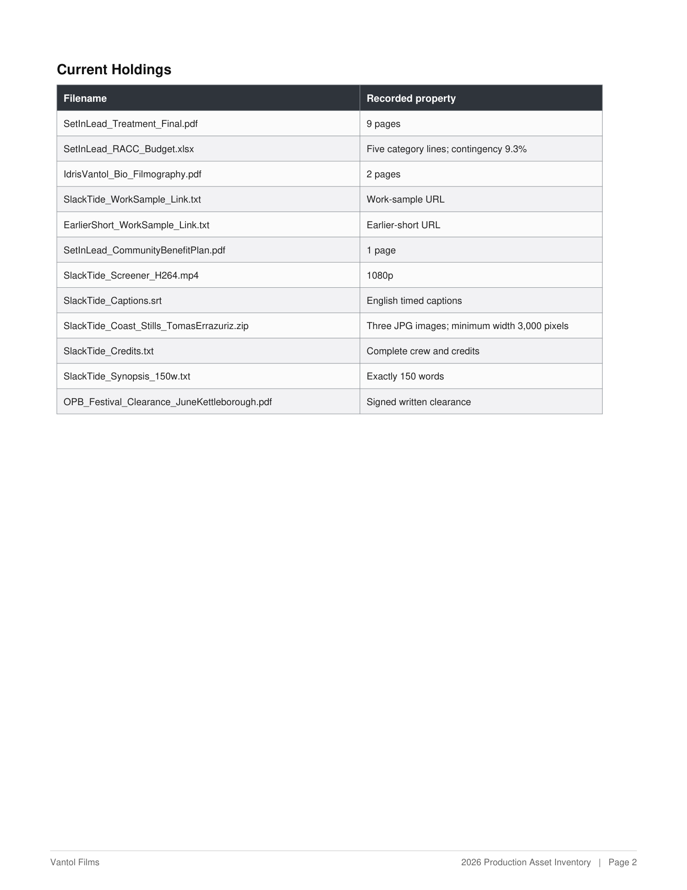
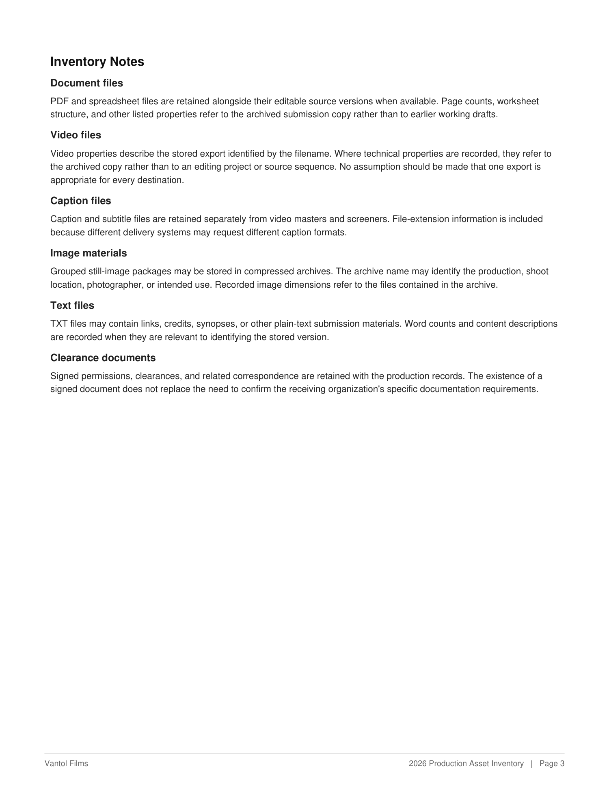
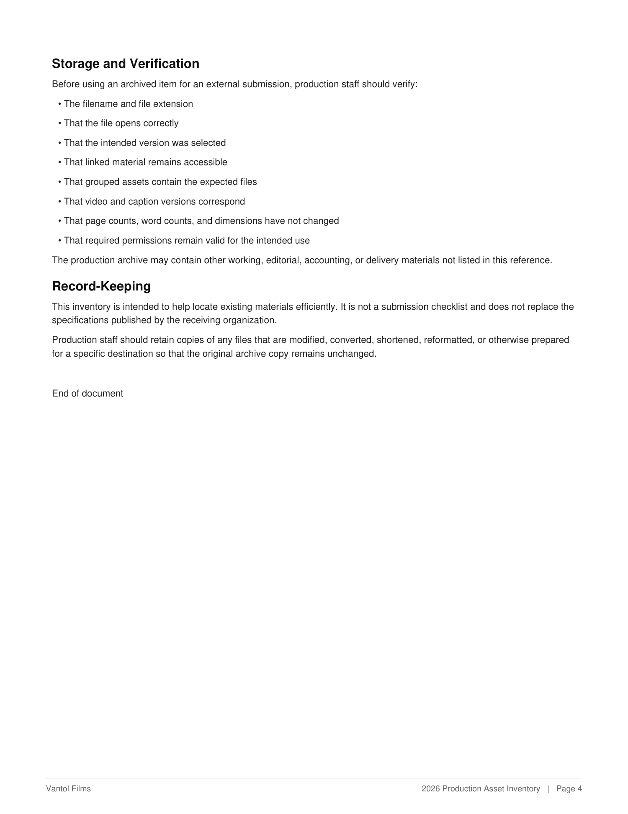

3.1Modifier and Assets Delivered that do not match the Leg A turn
Fails the taskMilestones - Milestone Annotations · Milestones - Continuation Criteria & AssetsMost common right now
The mistake
Modifier or Assets Delivered misdescribes the milestone's Leg A turn: deferred_asset or revision on Leg A turn 1, none as a modifier, a bare extension for a filename, or a deferred file no row lists. Only the last fails the task.
Do this instead
Set each modifier from what its Leg A turn does to delivered work, and list each file handed over at that turn by full filename, never the deliverable.
Where it happened
3 real tasks. Each shows the spot and what it should have been; click any line to open the task there.
the words at faultthe row or field at faultmissing from the taskwhat is righta task file
Example 7Visual Learning · 4 Leg A turns
What is wrongMilestone 9, the deferred_asset row for Leg A turn 2, reads Assets Delivered: .html, the deliverable's extension. The file that turn hands over, bourgery_legend_pages.pdf, is on no milestone.
The files their own Leg A turn hands over, or empty: never the deliverable.
How it breaks the standardThe .html on those rows is the extension of deltoid_plate_study.html, the deliverable, not a file the user hands over. The file Leg A turn 2 hands over, bourgery_legend_pages.pdf, sits on no row, so a user simulator replaying them has no record of when it arrives. A deferred file missing from Assets Delivered fails the task.
Leg A turn 1 attaches index.html, Vantol.pdf and handbook.mp4 together, and asks Model A to reconcile “a festival message and a runtime record” and complete the runtime section.
Where it shows
Milestone 7Leg A turn1modifierdeferred_assetassets delivered.mp4
Reconcile the newer Big Sky deadline and complete the runtime section for Big Sky and BendFilm.
Milestone 8Leg A turn1modifierrevisionassets delivered.mp4
Correct requirement statuses affected by the runtime evidence and save the cumulative dashboard.
The opening prompt. handbook.mp4, the only .mp4 in the inputs, is in the folder from the start.
What it should have been
Milestone 7Leg A turn1modifieropeningassets deliveredindex.html, Vantol.pdf, handbook.mp4
Milestone 8Leg A turn1modifieropeningassets deliveredindex.html, Vantol.pdf, handbook.mp4
How it breaks the standardLeg A turn 1 asks for milestone 7's work, and handbook.mp4 is in the folder before Model A starts, so nothing is deferred. Milestone 8's corrections fall within the response to that same turn, and a revision changes work delivered at an earlier Leg A turn. A bare .mp4 names no file.
The rule it breaksGuidelines · 6.3 Modifiersopening: The first turn and any later turn that adds a new requirement without touching work already delivered.Leg A turn 1 is always opening.
How it breaks the standardThe value none is not one of the four modifiers. Leg A turn 1 is always opening, and Leg A turn 4 asks for a list in the reply, changing neither walkthrough, so it is opening too. A wrong modifier costs points.
Read Modifier and Assets Delivered beside the Leg A prompts: Leg A turn 1 is opening, and each deferred file sits on the Leg A turn that hands it over.
Where the correct guidance is written
Section titles as they print, so you can search for them in the document.
Guidelines · 6.1 What a Milestone is Made of?
Modifier: What this turn does to work that already exists. One of the four in section 6.3. Assets delivered: Files handed over at this turn, or empty.
This turn is the milestone's Leg A turn.
Guidelines · 6.3 Modifiers
opening: The first turn and any later turn that adds a new requirement without touching work already delivered. revision: Something already delivered changes.
Also fails where a deferred asset was handed over during the conversation but is absent from assets_delivered, or is listed but missing from input_files/.
Why it matters
Both fields describe a Leg A turn: the modifier says what it did to work Model A had already delivered, and Assets Delivered lists the files the user handed over with it. You steer Model B by them in Leg B, and a user simulator replaying the milestones reads them to know what each turn changes and what arrives when. A wrong label misdescribes the task: a revision that revises nothing, a deferred file that was in scope from turn 1, a file handed over at a later turn that no row lists, so a replay has no record of it to hand over. Most of these cost points. The last one fails the task outright, because the QC spec requires Assets Delivered to list every deferred file.
Example 7Modifier and Assets Delivered that do not match the Leg A turnFails the task
Visual Learning4 Leg A turnstask 6a9a43f6353e55844b5c3fbe
From the taskMilestone rows flagged
Marked Assets Delivered names .html, which is the agent's own deliverable rather than an input the user hands over
1
The study exists as the one named page
Leg A turn1modifieropeningassets delivered.html
a single page exists under the requested name
it opens on its own with every plate showing
9
The Bourgery keys come from the delivered legend pages
Leg A turn2modifierdeferred_assetassets delivered.html
each Bourgery plate carries keys with legend wording taken from the delivered pages
every Bourgery entry sits on the plate whose legend page lists it
earlier content is intact
10
The study is organized by muscle
Leg A turn3modifierrevisionassets delivered.html
five muscle sections exist
each lists the plates carrying that muscle with the key and the legend wording beside the plate
+ 9 more rows in this task carry the same defect
From the taskLeg A prompt, turn 2, to Model A
Leg A turn 2
I scanned the Bourgery explanation pages this morning, bourgery_legend_pages.pdf is attached. Use it for the Bourgery keys.
From the taskGolden artifacts archive
deltoid_plate_study.html.html3094 KB
From the taskLeg A prompt, turn 1, to Model A
Leg A turn 1
I'm redrawing the deltoid plate for Yusuf's shoulder series and I want to study how the classic atlases handled this region before I commit to my own linework. I have the Bourgery on interlibrary loan until August 12, so I scanned its shoulder and back plates. I also shot the Vesalius muscle tabulae and their index pages before the Fabrica went back, and I pulled the Gray plates for the same muscles.
Build me deltoid_plate_study.html, one file I can open off my desktop. I care about five muscles: the deltoid, the trapezius, the pectoralis major, the latissimus dorsi and the infraspinatus. For each plat, wherever it shows one of those five, give me the key letter or number the plate uses for it, the name the atlas's own legend gives it, and the current anatomical term, so I end up with one side-by-side table across all three atlases. For the deltoid and the trapezius, tell me where the atlases disagree about the origin, the insertion, or whether the muscle is one of several, and say which plate says what. Make it something I can work with rather than read: clicking a key on a plate should take me to its row, and let me filter that table by muscle. Yusuf emailed me a note about the shoulder; make sure the view he cares about is covered.
Task filedeltoid_plate_study.html
deltoid_plate_study.htmlgolden artifact
Example 8Modifier and Assets Delivered that do not match the Leg A turnFails the task
Small Business & Personal Docs3 Leg A turnstask 6aa1cedb57e31958c9d6108d
From the taskMilestone rows flagged
7
turn 1 tagged deferred_asset: nothing is deferred into an opening turn, and there is no delivered work to revise
Reconcile the newer Big Sky deadline and complete the runtime section for Big Sky and BendFilm.
Leg A turn1modifierdeferred_assetassets delivered.mp4
Big Sky deadline updated to May 29
Big Sky 85:21 vs 85:00 Ineligible by 00:21
adapted Big Sky 84:51 Eligible after 00:30 tail removal
BendFilm 83:51 vs 85:00 Eligible
8
turn 1 tagged revision: nothing is deferred into an opening turn, and there is no delivered work to revise
Correct requirement statuses affected by the runtime evidence and save the cumulative dashboard.
Hey, Idris here. I have been trying to get a clearer handle on the grant and festival submissions because the information is spread across different places, and I do not want to keep checking separate notes every time I need to confirm information about them. I have been bouncing between project files, old planning notes, festival records, and submission paperwork, and a couple of newer records I found, and at this point I would rather have one place that I can actually trust when I need to see what is due, what each opportunity is asking for, what we already have on hand, and whether the versions we have can actually be submitted. I have attached the dashboard and records to the workspace, so please populate the submission overview for the RACC project, Big Sky, and BendFilm with each opportunity's project or film, deadline, fee, and notification date or window, and complete the requirements section for all three. For each item, classify it as Ready, Needs adaptation, or Missing, and show the relevant file when there is one. For the fees, they have confirmed to me that for RACC it will be the same amount as the service fee from the Timbers vs Sounders game in June, and that for Big Sky it will be twice that service fee. For BendFilm, it will be four times the order processing fee from that same game. I also found a festival message and a runtime record, so please reconcile them with the rest of the available records and update anything that is no longer accurate. I also need the runtime section completed so I can see whether Slack Tide actually qualifies for each one. Please base the calculations on the timecodes and use the displayed values directly. Please save the updated dashboard as `vantol_films_2026_submission_dashboard.html`.
Task filehandbook.mp4
handbook.mp4input file
Task fileindex.html
index.htmlinput file
Task fileVantol.pdf
Vantol.pdfinput file

Page 1 of 4

Page 2 of 4

Page 3 of 4

Page 4 of 4
Example 9Modifier and Assets Delivered that do not match the Leg A turnFails the task
Creative & Media4 Leg A turnstask 6aa09f92992e6e82402e51f0
From the taskMilestone rows flagged
Marked none is not one of the four modifiers
1
What the library actually contains is read from the screenshots rather than assumed from a generic folder copy.
Leg A turn1modifiernoneassets deliverednone
The user's own purchase and subscription records are opened to settle what already exists elsewhere, rather than the question being left open
Anything that is not fully present on the machine is brought down before a copy is proposed
The published output of the channel is reconciled against what the library holds
Every phase carries an action, a check, a passing result and a failing result
The walkthrough, its narration and the rendered video are produced in the formats the user asked for
4
Every point at which the user is told to stop is gathered into one place, in order, with what passing and failing look like.
Leg A turn4modifiernoneassets deliverednone
The list covers both halves of the walkthrough rather than one
Each entry gives both outcomes rather than only the failure
+ 1 more rows in this task carry the same defect
From the taskEvery Leg A prompt, to Model A
Leg A turn 1
The HoopHighlights library is moving off my old MacBook. The new machine lands next week and the drive I bought for the move is here. That library is four years of the channel, every game I've filmed and every cut I've made, and I've never moved it. Screenshots of what's on the old machine and what the drive looks like are in inputs, plus a shot of my cloud settings. I need a narrated walkthrough I can follow phase by phase over a couple of evenings. After each phase I want a check I can actually run, what it looks like when it passes, and what it looks like when it's failed so I know to stop. The half-cut WRYB finale reel has to come across with its history intact, I'm not rebuilding that one. Build the phase screens as migration_walkthrough.html, one scene per phase, put the narration in migration_narration.vtt with one cue per phase numbered to match, and render the whole thing to migration_walkthrough.mp4 so I can just hit play. Before you tell me to move or delete anything, work out what I actually have a second copy of right now. Don't take my word for it, my receipts and subscriptions are in my email.
Leg A turn 2
Ran the footage copy overnight. Screenshot 2026-09-09 at 07.02.18.png is what the drive shows this morning. Update the walkthrough to where I actually am rather than starting over, and keep the phase numbering as it stands.
Leg A turn 3
Split it. Everything through verifying the copy on the drive stays in migration_walkthrough.html with its narration in migration_narration.vtt. The part that happens on the new machine moves to relink_walkthrough.html with narration in relink_narration.vtt, rendered to relink_walkthrough.mp4. Keep the phase numbering continuous across the two. Don't change anything else
Leg A turn 4
Before I do any of this, give me every check across both walkthroughs in order, with what a pass looks like and what a fail looks like for each, in your reply.